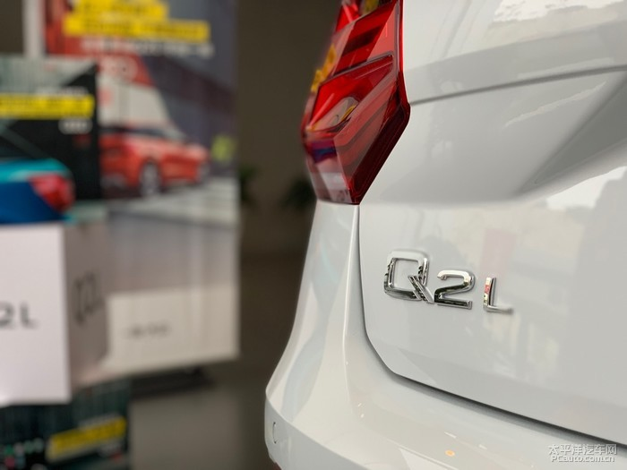

4s遇见Q2L－－年轻时尚型
太平洋汽车网 2018-12-12Q2L 上市还是有一个多月了吧。这车应该是咱们大成都上的。前段时间ssss的销售发朋友圈，什么李宇春呀，宋茜啥的。感觉挺嗨的。
今天刚好没事，路过ssss蹭一个洗车。空闲之余就遇见它了。虽说是奥迪定位最低端的越野车。它的样子，气势可是比Q3要巴适很多哦。毕竟Q3已经快要过气了。而Q2L 确是全新上市嘛。

Ssss 对他还是非常好的。给它开了小单间。进门就是他。这前脸挺漂亮。大白可爱。
潮，酷，不拘一格。标语可以说围绕Q2 L一圈。它的定位十分清晰，就是我这种年轻人

屁股在这个级别呢就是这样。我觉着比那个奔驰GLA好看太多了……不像是被砍过的。
这车属于中配了。入门款好像是21.77。问了一下如果要买。价格有优惠。
内饰方面。应该采用的和A3的一样。按键设置，档把都是一样。设计实用，合理。毕竟这个级别的小车空间不允许太多花哨的设计
后排没有这个出风口……有点逊色。
总结一下：Q2 L我觉着应该是小年轻的车。后排可以满足日常用。开着这车出去，回头率应该挺高。如果我买应该会选择有一个蓝色
车洗好了。
撤